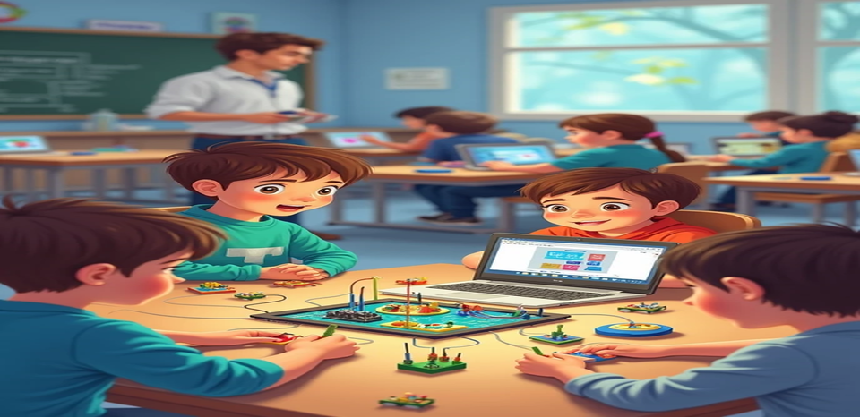

Curso de Robótica
Realicé prácticas físicas con Kidsblock y Arduino, así como simulaciones virtuales en Tinkercad.
Tecnologías: Kidsblock, Tinkercad
Ver proyectoHola, soy Oscar Macias, estudiante de Ingeniería en Tecnologías de la Información. Estoy en constante formación y me especializo en el desarrollo web y la lógica de programación. Actualmente estoy aprendiendo tecnologías como HTML, CSS, Java, SQL y enrutamiento. Me apasiona explorar nuevas herramientas del mercado y mejorar mis habilidades mediante la práctica y el estudio del código.
Ver mis proyectosMe apasiona aprender sobre nuevas tecnologías en el mercado y desarrollar soluciones mediante código. Creo firmemente que el aprendizaje es un proceso constante que impulsa el crecimiento personal y profesional.
- Oscar Macias
Realicé prácticas físicas con Kidsblock y Arduino, así como simulaciones virtuales en Tinkercad.
Tecnologías: Kidsblock, Tinkercad
Ver proyectoDesarrollé un sistema para registrar ventas, productos y stock en una tienda de víveres.
Tecnologías: Java Swing, DB MySQL
Ver proyecto